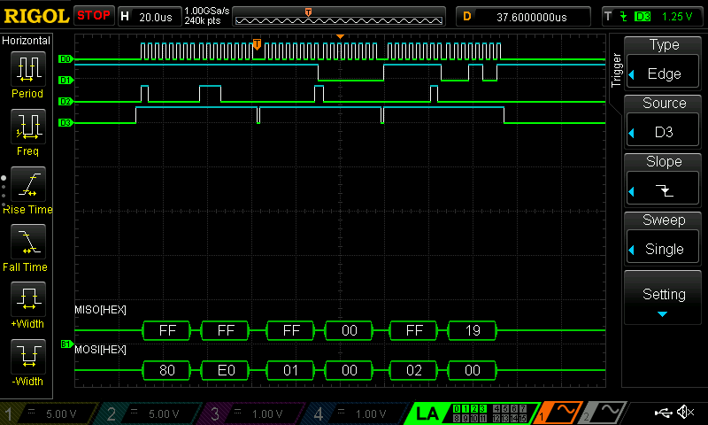

Lab 6: The Internet of Things and Serial Peripheral Interface
Introduction
The goal of this lab is to apply our learning about SPI to determine temperature at different resolutions and send it to a website using an ESP8266, which communicates and sends and receives data via USART to the MCU.
MCU Design
Objective
The objective of this lab is to be able to apply our knowledge of USART and SPI to communicate with new hardware and be able to send requests and receive data. We use this to control an LED and read temperature at the user’s choice on precision.
DS1722 Temperature Sensor
We are using the DS1722 Temperature Sensor to gather the ambient temperature, and it communicates with our MCU via SPI. For this lab, we want to be able to control the precision of our temperature readings to be 8, 9, 10, 11, and 12 bit resolutions. To tell our temperature sensor what precision we want, we first use the MCU to send to the DS1722 the register 0x80, which is where we want to write, and then send the precision we want. Then we want to read LSB from address 0x01 and MSB from 0x02 as the temperature is sent back over 16 bits. So we use this information and convert into decimal to display. To convert our 16 bit data into a decimal temperature reading, I would convert the 8 bits of MSB into its integer number, and then check if my decimal bits are 1 or 0 and then add the corresponding decimal to my integer temperature value. Below are tables with header references and the conversion table that I used.
Code Design
For this lab, the MCU is using USART to communicate with the ESP8266 and SPI to communicate with the DS1722. The USART communication with the MCU and ESP8266 is done in my main.c file, and SPI code for DS1722 is done in a separate file.
Headers and C Files for Supporting Files
For this lab, we were now able to utilize the CMSIS headers, meaning that we do not have to make our own header files. For FLASH, GPIO, RCC, SPI, and USART header and c files, I took them directly from the E155 Interrupt Tutorial Repository. Below is the code for my SPI files, which includes my pins and slightly modified code:
SPI Header File
// Christian Wu
// chrwu@g.hmc.edu
// 10/17/25
// Taken from E155 SPI Lecture
// STM32L432KC_SPI.h
// Header for SPI functions
#ifndef STM32L4_SPI_H
#define STM32L4_SPI_H
#include <stdint.h>
#include <stm32l432xx.h>
///////////////////////////////////////////////////////////////////////////////
// Definitions
///////////////////////////////////////////////////////////////////////////////
#define SPI_CE PA8
#define SPI_SCK PB3
#define SPI_COPI PB5
#define SPI_CIPO PB4
///////////////////////////////////////////////////////////////////////////////
// Function prototypes
///////////////////////////////////////////////////////////////////////////////
/* Enables the SPI peripheral and intializes its clock speed (baud rate), polarity, and phase.
* -- br: (0b000 - 0b111). The SPI clk will be the master clock / 2^(BR+1).
* -- cpol: clock polarity (0: inactive state is logical 0, 1: inactive state is logical 1).
* -- cpha: clock phase (0: data captured on leading edge of clk and changed on next edge,
* 1: data changed on leading edge of clk and captured on next edge)
* Refer to the datasheet for more low-level details. */
void initSPI(int br, int cpol, int cpha);
/* Transmits a character (1 byte) over SPI and returns the received character.
* -- send: the character to send over SPI
* -- return: the character received over SPI */
char spiSendReceive(char send);
#endifSPI C File
// STM32L432KC_SPI.c
// Source code for SPI functions
#include "../lib/STM32L432KC.h"
#include "../lib/STM32L432KC_SPI.h"
#include "../lib/STM32L432KC_GPIO.h"
#include "../lib/STM32L432KC_RCC.h"
/* Enables the SPI peripheral and intializes its clock speed (baud rate), polarity, and phase.
* -- br: (0b000 - 0b111). The SPI clk will be the master clock / 2^(BR+1).
* -- cpol: clock polarity (0: inactive state is logical 0, 1: inactive state is logical 1).
* -- cpha: clock phase (0: data captured on leading edge of clk and changed on next edge,
* 1: data changed on leading edge of clk and captured on next edge)
* Refer to the datasheet for more low-level details. */
void initSPI(int br, int cpol, int cpha) {
// Turn on GPIOA and GPIOB clock domains (GPIOAEN and GPIOBEN bits in AHB1ENR)
RCC->AHB2ENR |= (RCC_AHB2ENR_GPIOAEN | RCC_AHB2ENR_GPIOBEN);
RCC->APB2ENR |= RCC_APB2ENR_SPI1EN; // Turn on SPI1 clock domain (SPI1EN bit in APB2ENR)
gpioEnable(GPIO_PORT_A);
gpioEnable(GPIO_PORT_B);
// Initially assigning SPI pins
pinMode(SPI_SCK, GPIO_ALT); // SPI1_SCK
pinMode(SPI_CIPO, GPIO_ALT); // SPI1_CIPO
pinMode(SPI_COPI, GPIO_ALT); // SPI1_COPI
pinMode(SPI_CE, GPIO_OUTPUT); // Manual CS
// Set output speed type to high for SCK
GPIOB->OSPEEDR |= (GPIO_OSPEEDR_OSPEED3);
// Set to AF05 for SPI alternate functions
GPIOB->AFR[0] |= _VAL2FLD(GPIO_AFRL_AFSEL3, 5);
GPIOB->AFR[0] |= _VAL2FLD(GPIO_AFRL_AFSEL4, 5);
GPIOB->AFR[0] |= _VAL2FLD(GPIO_AFRL_AFSEL5, 5);
SPI1->CR1 |= _VAL2FLD(SPI_CR1_BR, br); // Set baud rate divider
SPI1->CR1 |= (SPI_CR1_MSTR);
SPI1->CR1 &= ~(SPI_CR1_CPOL | SPI_CR1_CPHA | SPI_CR1_LSBFIRST | SPI_CR1_SSM);
SPI1->CR1 |= _VAL2FLD(SPI_CR1_CPHA, cpha);
SPI1->CR1 |= _VAL2FLD(SPI_CR1_CPOL, cpol);
SPI1->CR2 |= _VAL2FLD(SPI_CR2_DS, 0b0111);
SPI1->CR2 |= (SPI_CR2_FRXTH | SPI_CR2_SSOE);
SPI1->CR1 |= (SPI_CR1_SPE); // Enable SPI
}
/* Transmits a character (1 byte) over SPI and returns the received character.
* -- send: the character to send over SPI
* -- return: the character received over SPI */
char spiSendReceive(char send) {
while(!(SPI1->SR & SPI_SR_TXE)); // Wait until the transmit buffer is empty
*(volatile char *) (&SPI1->DR) = send; // Transmit the character over SPI
while(!(SPI1->SR & SPI_SR_RXNE)); // Wait until data has been received
char rec = (volatile char) SPI1->DR;
return rec; // Return received character
}DS1722 Code Files
To do all my temperature calculations, I did my calculations and SPI calls on separate files, shown below:
DS1722.h code
// Christian Wu
// chrwu@g.hmc.edu
// 10/17/2025
// Header for DS1722 functions
#ifndef DS1722_H
#define DS1722_H
#include <stdint.h>
///////////////////////////////////////////////////////////////////////////////
// Function prototypes
///////////////////////////////////////////////////////////////////////////////
void initTemperatureSensor(void);
double updateTemperature(uint8_t precision);
#endifDS1722.c Code
// Christian Wu
// chrwu@g.hmc.edu
// 10/17/25
// DS1722.c
// Source code for DS1722 functions
#include "../lib/DS1722.h"
#include "../lib/STM32L432KC.h"
#include "../lib/STM32L432KC_GPIO.h"
#include "../lib/STM32L432KC_SPI.h"
#include "../lib/STM32L432KC_TIM.h"
#include <stdint.h>
#include <stdbool.h>
void initTemperatureSensor(){
digitalWrite(SPI_CE, PIO_HIGH);
spiSendReceive(0x80);
spiSendReceive(0b11100100);
digitalWrite(SPI_CE, PIO_LOW);
}
double updateTemperature(uint8_t precision){
digitalWrite(SPI_CE, PIO_HIGH);
spiSendReceive(0x80);
spiSendReceive(precision);
digitalWrite(SPI_CE, PIO_LOW);
uint8_t lsb;
uint8_t msb;
uint8_t fracBits;
if (precision == 0b11100000) // 8-bit resolution
fracBits = 0;
else if (precision == 0b11100010) // 9-bit resolution
fracBits = 1;
else if (precision == 0b11100100) // 10-bit resolution
fracBits = 2;
else if (precision == 0b11100110) // 11-bit resolution
fracBits = 3;
else if (precision == 0b11101110) // 12-bit resolution
fracBits = 4;
else
fracBits = 4; // default to 12-bit
digitalWrite(SPI_CE, PIO_HIGH);
spiSendReceive(0x01);
lsb = spiSendReceive(0x00);
digitalWrite(SPI_CE, PIO_LOW);
digitalWrite(SPI_CE, PIO_HIGH);
spiSendReceive(0x02);
msb = spiSendReceive(0x00);
digitalWrite(SPI_CE, PIO_LOW);
bool negative = (msb & 0x80);
int8_t whole = (int8_t)msb;
double frac = 0.0;
if (fracBits >= 1 && (lsb & 0x80)) frac += 0.5;
if (fracBits >= 2 && (lsb & 0x40)) frac += 0.25;
if (fracBits >= 3 && (lsb & 0x20)) frac += 0.125;
if (fracBits >= 4 && (lsb & 0x10)) frac += 0.0625;
if (negative) {
return (double)whole - frac;
} else {
return (double)whole + frac;
}
}Web Processing Code Files
To clean up my main file and not have complex code that is confusing on it, I moved all the web handling to a separate file and then called it in my main file.
webpage.h code
// Christian Wu
// chrwu@g.hmc.edu
// 10/21/25
// Header for webpage handling functions
#ifndef WEBPAGE_H
#define WEBPAGE_H
#include <stdint.h>
#include <stm32l432xx.h>
///////////////////////////////////////////////////////////////////////////////
// External webpage string declarations
///////////////////////////////////////////////////////////////////////////////
extern char* webpageStart;
extern char* ledStr;
extern char* tempStr;
extern char* webpageEnd;
///////////////////////////////////////////////////////////////////////////////
// Function prototypes
///////////////////////////////////////////////////////////////////////////////
int inString(char request[], char des[]);
int updateLEDStatus(char request[], int current_status);
void processWebRequest(USART_TypeDef * USART, uint8_t *precision, int *led_status);
#endifwebpage.c file
// Christian Wu
// chrwu@g.hmc.edu
// 10/21/25
// Source code for webpage handling
#include "../lib/webpage.h"
#include "../lib/STM32L432KC.h"
#include "../lib/STM32L432KC_GPIO.h"
#include "../lib/STM32L432KC_USART.h"
#include "../lib/DS1722.h"
#include "../lib/main.h"
#include <string.h>
#include <stdio.h>
///////////////////////////////////////////////////////////////////////////////
// Webpage HTML strings
///////////////////////////////////////////////////////////////////////////////
char* webpageStart = "<!DOCTYPE html><html><head><title>E155 Web Server Demo Webpage</title>\
<meta name=\"viewport\" content=\"width=device-width, initial-scale=1.0\">\
</head>\
<body><h1>E155 Web Server Demo Webpage</h1>";
char* ledStr = "<p>LED Control:</p><form action=\"ledon\"><input type=\"submit\" value=\"Turn the LED on!\"></form>\
<form action=\"ledoff\"><input type=\"submit\" value=\"Turn the LED off!\"></form>";
char* tempStr =
"<p>Temperature Precision Control:</p>"
"<form action=\"8bit\"><input type=\"submit\" value=\"8 Bit Resolution\"></form>"
"<form action=\"9bit\"><input type=\"submit\" value=\"9 Bit Resolution\"></form>"
"<form action=\"10bit\"><input type=\"submit\" value=\"10 Bit Resolution\"></form>"
"<form action=\"11bit\"><input type=\"submit\" value=\"11 Bit Resolution\"></form>"
"<form action=\"12bit\"><input type=\"submit\" value=\"12 Bit Resolution\"></form>";
char* webpageEnd = "</body></html>";
///////////////////////////////////////////////////////////////////////////////
// Helper Functions
///////////////////////////////////////////////////////////////////////////////
int inString(char request[], char des[]) {
if (strstr(request, des) != NULL) {return 1;}
return -1;
}
int updateLEDStatus(char request[], int current_status)
{
if (inString(request, "ledoff")==1) {
digitalWrite(LED_PIN, PIO_LOW);
return 0;
}
else if (inString(request, "ledon")==1) {
digitalWrite(LED_PIN, PIO_HIGH);
return 1;
}
return current_status;
}
///////////////////////////////////////////////////////////////////////////////
// Main Web Request Processing Function
///////////////////////////////////////////////////////////////////////////////
void processWebRequest(USART_TypeDef * USART, uint8_t *precision, int *led_status)
{
// Receive web request from the ESP
char request[BUFF_LEN] = " ";
int charIndex = 0;
// Keep going until you get end of line character
while(inString(request, "\n") == -1) {
// Wait for a complete request to be transmitted before processing
while(!(USART->ISR & USART_ISR_RXNE));
request[charIndex++] = readChar(USART);
}
// Check for precision change requests
if (inString(request, "8bit")==1) {
*precision = 0b11100000;
}
else if (inString(request, "9bit")==1) {
*precision = 0b11100010;
}
else if (inString(request, "10bit")==1) {
*precision = 0b11100100;
}
else if (inString(request, "11bit")==1) {
*precision = 0b11100110;
}
else if (inString(request, "12bit")==1) {
*precision = 0b11101110;
}
// Read temperature with current precision
double temp = updateTemperature(*precision);
char tempStatusStr[32];
sprintf(tempStatusStr, "Temperature %.4f C", temp);
// Update LED status
*led_status = updateLEDStatus(request, *led_status);
char ledStatusStr[20];
if (*led_status == 1)
sprintf(ledStatusStr,"LED is on!");
else if (*led_status == 0)
sprintf(ledStatusStr,"LED is off!");
// Transmit the webpage over UART
sendString(USART, webpageStart);
sendString(USART, ledStr);
sendString(USART, tempStr);
sendString(USART, "<h2>LED Status</h2>");
sendString(USART, "<p>");
sendString(USART, ledStatusStr);
sendString(USART, "</p>");
sendString(USART, "<h2>Temperature </h2>");
sendString(USART, "<p>");
sendString(USART, tempStatusStr);
sendString(USART, "</p>");
sendString(USART, webpageEnd);
}Main Code File
To tie everything together and actually run my code on the MCU, I had a main.h header file, and main.c file. My code is as shows below:
main.h code
// Christian Wu
// chrwu@g.hmc.edu
// 10/17/25
// Header file for main.c
#ifndef MAIN_H
#define MAIN_H
#include "STM32L432KC.h"
#include <stm32l432xx.h>
#include "STM32L432KC_FLASH.h"
#include "STM32L432KC_GPIO.h"
#include "STM32L432KC_RCC.h"
#include "STM32L432KC_SPI.h"
#include "STM32L432KC_TIM.h"
#include "DS1722.h"
#include "webpage.h"
#define LED_PIN PA6
#define BUFF_LEN 32
#endifmain.c code
/*
File: main.c
Author: Christian Wu
Email: chrwu@g.hmc.edu
Date: 10/17/25
*/
#include "../lib/main.h"
int main(void) {
configureFlash();
configureClock();
gpioEnable(GPIO_PORT_A);
gpioEnable(GPIO_PORT_B);
gpioEnable(GPIO_PORT_C);
pinMode(LED_PIN, GPIO_OUTPUT);
initTIM(TIM15);
USART_TypeDef * USART = initUSART(USART1_ID, 125000);
initSPI(0b111, 0, 1);
initTemperatureSensor();
int led_status = 0;
uint8_t precision = 0b11100100;
while(1) {
processWebRequest(USART, &precision, &led_status);
}
}Hardware
Design and Schematic
I can now build my hardware and program my MCU. I am using PA6 to control my LED. For SPI, I am using PB3 for SCLK, PB4 for CIPO, PB5, for COPI, and PA8 for CE.
Below, is my schematic:
Results
After creating my Segger project and uploading the code to my MCU, I was successfully able to control turning on and off the LED as well as setting my desired resolution and getting temperature readings from my DS1722 Temperature Sensor. Bellow are oscilloscope logic analyzer traces for each of the resolutions
For 8 bit resolution my MSB value was 19 in hex, which corresponds to 25, which is correctly displayed on my website. My LSB correctly shows 0 as I am not reading anything from it.

For 9 bit resolution my MSB value was 17 in hex, which corresponds to 23, which is correctly displayed on my website. My LSB shows 80, which means the 2-1 bit is a 1, so we add 0.5 C, giving 23.5 C.
For 10 bit resolution my MSB value was 17 in hex, which corresponds to 23, which is correctly displayed on my website. My LSB shows C0, which means the 2-1 bit is a 1, so we add 0.5 C, and the 2-2 bit is a 1, so we also add 0.25 C, giving 23.75 C.

For 10 bit resolution my MSB value was 17 in hex, which corresponds to 23, which is correctly displayed on my website. My LSB shows A0, which means the 2-1 bit is a 1, so we add 0.5 C, and the 2-3 bit is a 1, so we also add 0.125 C, giving 23.625 C.
For 12 bit resolution my MSB value was 18 in hex, which corresponds to 24, which is correctly displayed on my website. My LSB shows 10, which means the 2-4 bit is a 1, so we add 0.0625 C, giving 24.0625 C.

As a result, my design and project has met all the requirements for this lab.
AI Prototype
Prompt
To test how AI would do for this lab, I entered prompts to ChatGPT, one for HTML design, and one for SPI design.
HTML Prompt
I’m making a web portal to interface with a temperature sensor. Create a HTML page that looks good and is intuitive to show the temperature, control an LED, and change the precision of the readout.AI Result
#<!DOCTYPE html>
<html lang="en">
<head>
<meta charset="UTF-8" />
<meta name="viewport" content="width=device-width, initial-scale=1.0" />
<title>Temperature Sensor Dashboard</title>
<style>
body {
font-family: "Inter", system-ui, sans-serif;
background: linear-gradient(135deg, #1e293b, #0f172a);
color: #f1f5f9;
display: flex;
flex-direction: column;
align-items: center;
justify-content: center;
height: 100vh;
margin: 0;
}
.card {
background: #334155;
border-radius: 16px;
padding: 2rem 3rem;
box-shadow: 0 8px 24px rgba(0,0,0,0.3);
text-align: center;
max-width: 400px;
width: 90%;
}
h1 {
margin-bottom: 1rem;
color: #f8fafc;
}
.temperature {
font-size: 3rem;
font-weight: 600;
margin: 1rem 0;
color: #38bdf8;
}
button {
background: #38bdf8;
color: #0f172a;
border: none;
border-radius: 8px;
padding: 0.75rem 1.5rem;
font-size: 1rem;
font-weight: 600;
cursor: pointer;
margin-top: 1rem;
transition: all 0.2s ease;
}
button:hover {
background: #0ea5e9;
}
.led-indicator {
width: 20px;
height: 20px;
border-radius: 50%;
margin-left: 10px;
display: inline-block;
background-color: gray;
vertical-align: middle;
}
select {
background: #1e293b;
color: #f1f5f9;
border: 1px solid #475569;
border-radius: 8px;
padding: 0.5rem 1rem;
margin-top: 1rem;
font-size: 1rem;
outline: none;
}
label {
display: block;
margin-top: 1rem;
font-weight: 500;
color: #e2e8f0;
}
</style>
</head>
<body>
<div class="card">
<h1>🌡️ Temperature Sensor</h1>
<div class="temperature" id="tempValue">-- °C</div>
<label for="precisionSelect">Precision</label>
<select id="precisionSelect">
<option value="0.5">0.5 °C</option>
<option value="0.25">0.25 °C</option>
<option value="0.125">0.125 °C</option>
<option value="0.0625">0.0625 °C</option>
</select>
<div style="margin-top: 1.5rem;">
<button id="ledToggle">
Toggle LED
<span id="ledIndicator" class="led-indicator"></span>
</button>
</div>
</div>
<script>
const tempDisplay = document.getElementById('tempValue');
const ledButton = document.getElementById('ledToggle');
const ledIndicator = document.getElementById('ledIndicator');
const precisionSelect = document.getElementById('precisionSelect');
let ledOn = false;
let precision = 0.5;
// Simulate fetching data from backend
function fetchTemperature() {
// Replace with: fetch('/api/temperature')...
const temp = (20 + Math.random() * 5).toFixed(2);
tempDisplay.textContent = `${temp} °C`;
}
function toggleLED() {
ledOn = !ledOn;
ledIndicator.style.backgroundColor = ledOn ? '#22c55e' : 'gray';
// Example backend call:
// fetch('/api/led', { method: 'POST', body: JSON.stringify({ state: ledOn }) })
}
function changePrecision() {
precision = parseFloat(precisionSelect.value);
// Example backend call:
// fetch('/api/precision', { method: 'POST', body: JSON.stringify({ precision }) })
console.log("Precision changed to:", precision);
}
ledButton.addEventListener('click', toggleLED);
precisionSelect.addEventListener('change', changePrecision);
// Update temperature every 2 seconds
setInterval(fetchTemperature, 2000);
fetchTemperature();
</script>
</body>
</html>SPI Prompt
#include "stm32l432xx.h"
#include <stdint.h>
/*
* DS1722 SPI Notes:
* - Temperature register is 16 bits (MSB first).
* - Read command for temperature register = 0x02.
* - The DS1722 shifts out data while you clock phantom bytes (0x00).
* - In 12-bit mode: upper 12 bits = temp, lower 4 bits unused.
* - Conversion: integer part = MSB, fractional = (LSB >> 4) * 0.0625°C
*/
// Adjust these for your board wiring:
#define DS1722_CS_PORT GPIOA
#define DS1722_CS_PIN 4
static inline void DS1722_Select(void) {
DS1722_CS_PORT->BSRR = (1U << (DS1722_CS_PIN + 16)); // Reset bit -> CS low
}
static inline void DS1722_Deselect(void) {
DS1722_CS_PORT->BSRR = (1U << DS1722_CS_PIN); // Set bit -> CS high
}
// Blocking SPI helper using CMSIS
static uint8_t SPI1_Transfer(uint8_t data) {
// Wait for TXE (Transmit buffer empty)
while (!(SPI1->SR & SPI_SR_TXE)) {}
*(volatile uint8_t *)&SPI1->DR = data;
// Wait for RXNE (Receive buffer not empty)
while (!(SPI1->SR & SPI_SR_RXNE)) {}
return *(volatile uint8_t *)&SPI1->DR;
}
// --- PUBLIC FUNCTION --- //
float DS1722_ReadTemperature(void) {
uint8_t msb, lsb;
float temperature;
DS1722_Select();
// Send command byte to read temperature register
SPI1_Transfer(0x02);
// Read two bytes of temperature data
msb = SPI1_Transfer(0x00);
lsb = SPI1_Transfer(0x00);
DS1722_Deselect();
// Combine and convert: 12-bit reading (MSB + upper nibble of LSB)
int16_t rawTemp = (msb << 8) | lsb;
rawTemp >>= 4; // discard lower nibble
// DS1722 outputs signed 12-bit, so sign extend if needed
if (rawTemp & 0x800) {
rawTemp |= 0xF000; // sign extend for negative temps
}
temperature = rawTemp * 0.0625f; // each bit = 0.0625 °C
return temperature;
}AI Result
Reflection
For this prompt, AI did really well with the HTML Design, forming a webpage that I was really visually impressed with and would implement into my project. Below is an image of what it looked like when I ran the html file on my computer.
For the C code, it did not work as well, as it did not get the MSB and LSB adresses right, so it was not able to read from the right addresses. Thus, when I tried implementing this code, it was not able to run successfully. For future use of AI, I would give it the data sheet to make it more accurate and review the code myself to give the AI feedback on how to make the code be able to work.
Hours Spent
I spent 17 hours on this lab.